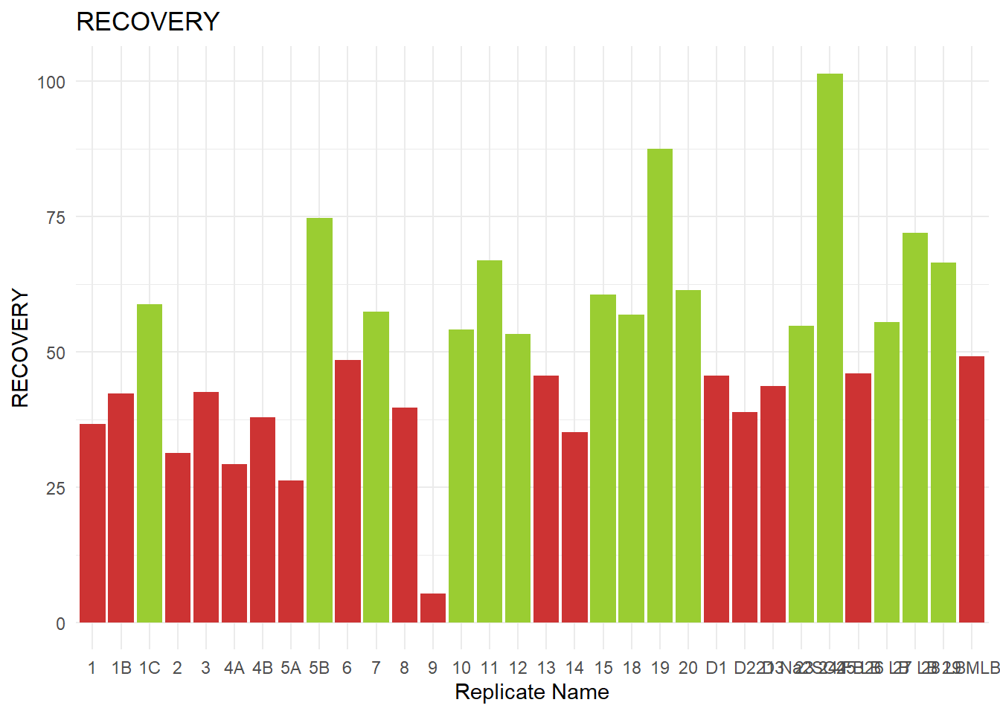
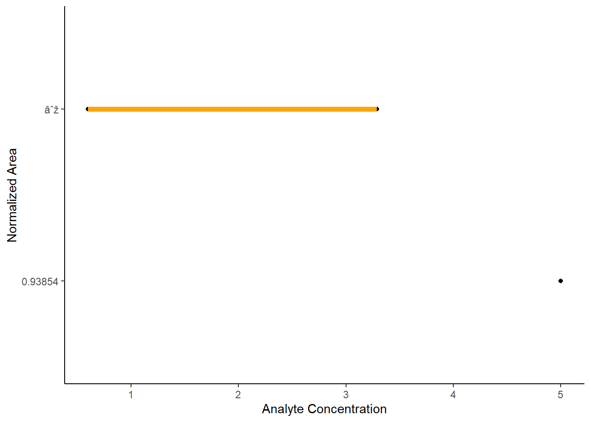
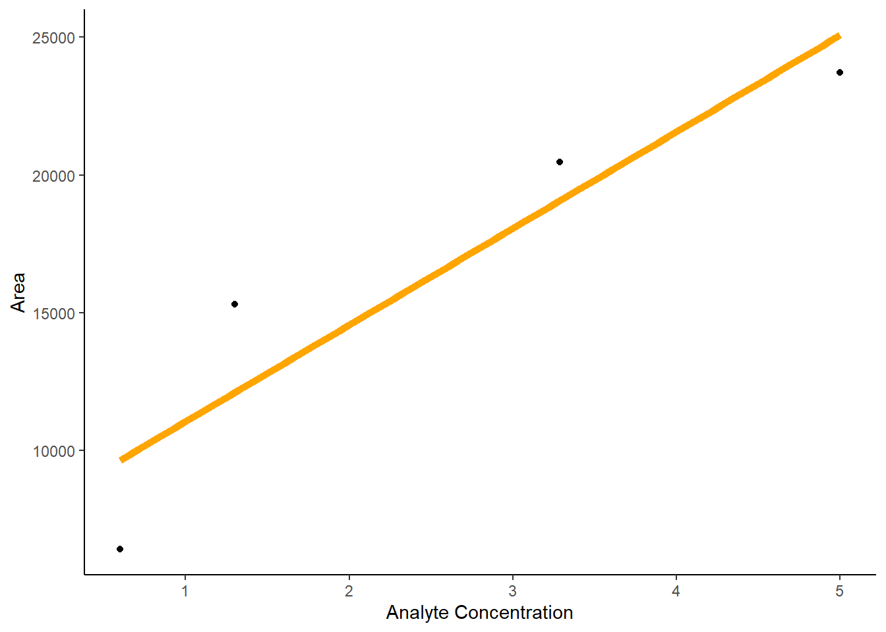
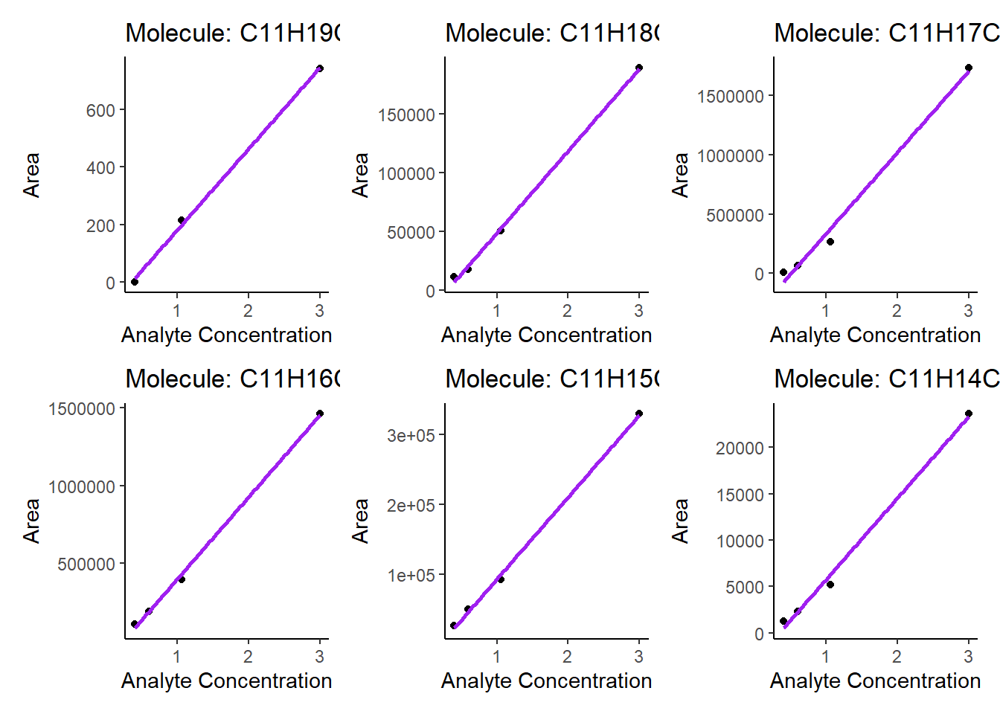

── Conflicts ────────────────────────────────────────── tidyverse_conflicts() ──
✖ dplyr::filter() masks stats::filter()
✖ dplyr::lag() masks stats::lag()
ℹ Use the conflicted package (<http://conflicted.r-lib.org/>) to force all conflicts to become errors
library(readxl)library(patchwork)#Load the fileGC_qToF_CPsFoodResults<-read_excel("F:/OREBRO/CP analysis/Food project/Result/Skyline/GC_qToF_CPsFoodResults.xlsx")#Wide the data so each sample is in one rowGC_qToF_CPsFoodResultsB <- GC_qToF_CPsFoodResults |>filter(Quantitative =="YES") |>pivot_wider(id_cols =`Replicate Name`,names_from = Molecule, # name of the new columnvalues_from = Area #name of the values for the new columns ) #data type #Make the data in the data frame numericpattern <-"^C\\d+"# This pattern matches column names starting with "C" followed by numbersGC_qToF_CPsFoodResultsB <-mutate_at(GC_qToF_CPsFoodResultsB, vars(matches(pattern)), as.numeric) # Apply as.numeric() to columns matching the patternGC_qToF_CPsFoodResultsB$IS =as.numeric(GC_qToF_CPsFoodResultsB$IS)# Define the IS as numeric #Divide the area of the homologues by the ISCorrectedArea <-mutate_at(GC_qToF_CPsFoodResultsB, vars(matches(pattern)), ~ . / GC_qToF_CPsFoodResultsB$IS) #It will now do it for all the columns that have the pattern (start the name with "C")
8.2 Calculate the recovery
# Define the RS as numericGC_qToF_CPsFoodResultsB$RS =as.numeric(GC_qToF_CPsFoodResultsB$RS) GC_qToF_CPsFoodResultsB$IS =as.numeric(GC_qToF_CPsFoodResultsB$IS)##########Filter and prepare the standards that we want to compare toStd<-GC_qToF_CPsFoodResultsB|>select(`Replicate Name`, IS, RS)|>#Select the columns that we needfilter(str_detect(`Replicate Name`, "Std", negate =FALSE))|>#Select the standardsmutate(RatioStd = IS / RS) |>#Calculate the IS/RS area for the standards summarize(AverageRatio =mean(RatioStd, na.rm =TRUE)) #Calculate the average of the three standards##############Calculate the recoveryGC_qToF_CPsFoodResultsB<-GC_qToF_CPsFoodResultsB|>filter(str_detect(`Replicate Name`, "9_", negate =TRUE))|>#Exclude the calibration standardsfilter(str_detect(`Replicate Name`, "10_", negate =TRUE))|>#Exclude the calibration standardsfilter(str_detect(`Replicate Name`, "11_", negate =TRUE))|>#Exclude the calibration standardsfilter(str_detect(`Replicate Name`, "12_", negate =TRUE))|>#Exclude the calibration standardsfilter(str_detect(`Replicate Name`, "13_", negate =TRUE))|>#Exclude the calibration standardsfilter(str_detect(`Replicate Name`, "14_", negate =TRUE))|>#Exclude the calibration standardsfilter(str_detect(`Replicate Name`, "15_", negate =TRUE))|>#Exclude the calibration standardsfilter(str_detect(`Replicate Name`, "16_", negate =TRUE))|>#Exclude the calibration standardsfilter(str_detect(`Replicate Name`, "17_", negate =TRUE))|>#Exclude the calibration standardsfilter(str_detect(`Replicate Name`, "Std", negate =TRUE))|>#Exclude the calibration standardsmutate(RatioSample= IS / RS) |>#Divide IS/RS for all samplesmutate(Recovery=RatioSample/as.numeric(Std))|>#Divide each sample ratio of IS/RS by the average ratio of the standardsmutate(RecoveryPerc=Recovery*100) #The recovery in percentage#################Plotting the recovery# Define colors based on conditions: less than 50% red and above greenGC_qToF_CPsFoodResultsB$color <-ifelse(GC_qToF_CPsFoodResultsB$RecoveryPerc >50, "#CD3333", "#9ACD32")#Reorder the samplesGC_qToF_CPsFoodResultsB$`Replicate Name`<-factor(GC_qToF_CPsFoodResultsB$`Replicate Name`, levels =c("1", "1B", "1C", "2", "3", "4A", "4B", "5A", "5B", "6", "7", "8", "9", "10", "11", "12", "13", "14", "15", "18", "19", "20", "D1", "D2", "D3", "21 Na2SO4", "23 24 FB", "25 LB", "26 LB", "27 LB", "28 LB", "29 MLB"))# Bar plotggplot(GC_qToF_CPsFoodResultsB, aes(x =`Replicate Name`, y = RecoveryPerc, fill = color)) +geom_bar(stat ="identity", position ="dodge") +scale_fill_manual(values =c("#CD3333", "#9ACD32"), guide =FALSE) +labs(x ="Replicate Name", y ="RECOVERY", title ="RECOVERY") +theme_minimal()
Warning: The `guide` argument in `scale_*()` cannot be `FALSE`. This was deprecated in
ggplot2 3.3.4.
ℹ Please use "none" instead.

8.3 Prepare the single chain standards
Before quantifying PCAs in R by the deconvolution method, I need to prepare a “calibration” excel to input in the script. In this Excel one calibration curve is built by linear regression for each PCA homologue in each standard
8.3.1 Build the calibration curves in R studio:
#Load the fileTESTING<-read_excel("F:/LINKOPING/Manuscripts/Skyline/Skyline/TESTING.xlsx")|>mutate(`Analyte Concentration`=as.numeric(`Analyte Concentration`))######Build the calibration curve for one PCA homologueTESTING |>select(`Replicate Name`, Molecule, `Isotope Label Type`, `Normalized Area`, `Analyte Concentration`) |>#Select the columns that we needfilter(`Isotope Label Type`=="Quan") |>#Filter for the Quanfilter(`Molecule`=="C11H19Cl5")|>#Filter for one PCA homologuefilter(str_detect(`Replicate Name`, "11_57_", negate =TRUE)) |>#remove all the other standards ggplot(aes(x =`Analyte Concentration`, y =`Normalized Area`)) +#Plot the scatter plotgeom_point() +geom_smooth(method ="lm", # uses the linear regression modelse =FALSE, # this will remove the confidence intervalscolour ="orange",size =2) +theme_classic() +ylab("Normalized Area")
Warning: Using `size` aesthetic for lines was deprecated in ggplot2 3.4.0.
ℹ Please use `linewidth` instead.
`geom_smooth()` using formula = 'y ~ x'

#################################################################################################################################Normalized area is missing some values in the data frame so, I tried with the Area instead to see if the code was correct###################################################################################################################TESTING |>select(`Replicate Name`, Molecule, `Isotope Label Type`, Area, `Analyte Concentration`) |>#Select the columns that we needfilter(`Isotope Label Type`=="Quan") |>#Filter for the Quanfilter(`Molecule`=="C11H19Cl5")|>#Filter for one PCA homologuefilter(str_detect(`Replicate Name`, "11_57_", negate =TRUE)) |>#remove all the other standards ggplot(aes(x =`Analyte Concentration`, y = Area)) +#Plot the scatter plotgeom_point() +geom_smooth(method ="lm", # uses the linear regression modelse =FALSE, # this will remove the confidence intervalscolour ="orange",size =2) +theme_classic() +ylab("Area")
`geom_smooth()` using formula = 'y ~ x'

####################################################################################################################################################Try to generate a loop for the calibration curve, so I don't need to write the homologue and the standards for every calibration curve#############################################################################################################################################################################Two standards per each molecule -> each molecule one calibration curve for standard "A" and one for "B"###########CALIBRATION FOR STANDARDS "A" ################################################### Function to create molecule namescreate_molecule_name <-function(i, j) { molecule_name <-paste0("C", i, "H", (2*i)+2-j, "Cl", j)return(molecule_name)}# Create an empty list to store plots and calibration resultsplotsA <-list()calibration_resultsA <-data.frame(Molecule =character(),Slope =numeric(),Intercept =numeric(),R_squared =numeric(),stringsAsFactors =FALSE)# Define the range of i and ji_values <-11j_values <-3:11# Nested loops to iterate over i and jfor (i in i_values) {for (j in j_values) {# Create molecule name molecule_name <-create_molecule_name(i, j)# Filter data for the current molecule filtered_dataA <- TESTING |>filter(`Isotope Label Type`=="Quan", Molecule == molecule_name, Note =="A") # Check if there are any non-NA cases in the filtered dataif (sum(!is.na(filtered_dataA$Area)) ==0||sum(!is.na(filtered_dataA$`Analyte Concentration`)) ==0) {cat("No valid cases for fitting the model for molecule:", molecule_name, "\n") } else {# Fit linear model to the data lm_modelA <-lm(Area ~`Analyte Concentration`, data = filtered_dataA)# Extract slope and intercept from the model slopeA <-coef(lm_modelA)[2] interceptA <-coef(lm_modelA)[1]# Calculate R-squared R_squaredA <-summary(lm_modelA)$r.squared# Store the calibration results in the data frame calibration_resultsA <-rbind(calibration_resultsA, data.frame(Molecule = molecule_name,Slope = slopeA,Intercept = interceptA,R_squared = R_squaredA))# Create plot for the current molecule plotA <-ggplot(filtered_dataA, aes(x =`Analyte Concentration`, y = Area)) +geom_point() +geom_smooth(method ="lm", se =FALSE, colour ="orange",size =1) +theme_classic() +ylab("Area") +ggtitle(paste("Molecule:", molecule_name))# Store the plot in the list plotsA[[paste("Molecule", molecule_name)]] <- plotA } }}
No valid cases for fitting the model for molecule: C11H21Cl3
No valid cases for fitting the model for molecule: C11H14Cl10
No valid cases for fitting the model for molecule: C11H13Cl11
# Print the data frame with calibration resultsprint(calibration_resultsA)
# Arrange plots in a gridcalibration_curves_gridA <- plotsA[[1]]for (i in2:length(plotsA)) { calibration_curves_gridA <- calibration_curves_gridA + plotsA[[i]]}# Print the grid of calibration curvescalibration_curves_gridA
`geom_smooth()` using formula = 'y ~ x'
`geom_smooth()` using formula = 'y ~ x'
`geom_smooth()` using formula = 'y ~ x'
`geom_smooth()` using formula = 'y ~ x'
`geom_smooth()` using formula = 'y ~ x'
###########CALIBRATION FOR STANDARDS "B" ################################################### Function to create molecule namescreate_molecule_name <-function(i, j) { molecule_name <-paste0("C", i, "H", (2*i)+2-j, "Cl", j)return(molecule_name)}# Create an empty list to store plots and calibration resultsplotsB <-list()calibration_resultsB <-data.frame(Molecule =character(),Slope =numeric(),Intercept =numeric(),R_squared =numeric(),stringsAsFactors =FALSE)# Define the range of i and ji_values <-11j_values <-3:11# Nested loops to iterate over i and jfor (i in i_values) {for (j in j_values) {# Create molecule name molecule_name <-create_molecule_name(i, j)# Filter data for the current molecule filtered_dataB <- TESTING |>filter(`Isotope Label Type`=="Quan", Molecule == molecule_name, Note =="B") # Check if there are any non-NA cases in the filtered dataif (sum(!is.na(filtered_dataB$Area)) ==0||sum(!is.na(filtered_dataB$`Analyte Concentration`)) ==0) {cat("No valid cases for fitting the model for molecule:", molecule_name, "\n") } else {# Fit linear model to the data lm_modelB <-lm(Area ~`Analyte Concentration`, data = filtered_dataB)# Extract slope and intercept from the model slopeB <-coef(lm_modelB)[2] interceptB <-coef(lm_modelB)[1]# Calculate R-squared R_squaredB <-summary(lm_modelB)$r.squared# Store the calibration results in the data frame calibration_resultsB <-rbind(calibration_resultsB, data.frame(Molecule = molecule_name,Slope = slopeB,Intercept = interceptB,R_squared = R_squaredB))# Create plot for the current molecule plotB <-ggplot(filtered_dataB, aes(x =`Analyte Concentration`, y = Area)) +geom_point() +geom_smooth(method ="lm", se =FALSE, colour ="purple",size =1) +theme_classic() +ylab("Area") +ggtitle(paste("Molecule:", molecule_name))# Store the plot in the list plotsB[[paste("Molecule", molecule_name)]] <- plotB } }}
No valid cases for fitting the model for molecule: C11H21Cl3
No valid cases for fitting the model for molecule: C11H20Cl4
No valid cases for fitting the model for molecule: C11H13Cl11
# Print the data frame with calibration resultsprint(calibration_resultsB)
# Arrange plots in a gridcalibration_curves_gridB <- plotsB[[1]]for (i in2:length(plotsB)) { calibration_curves_gridB <- calibration_curves_gridB + plotsB[[i]]}# Print the grid of calibration curvescalibration_curves_gridB
`geom_smooth()` using formula = 'y ~ x'
`geom_smooth()` using formula = 'y ~ x'
`geom_smooth()` using formula = 'y ~ x'
`geom_smooth()` using formula = 'y ~ x'
`geom_smooth()` using formula = 'y ~ x'

8.3.2 The code for Excel:
#Response factor of each homologue per 1 ng/µL#=ROUND(SLOPE(INDIRECT(ADDRESS(ROW();COLUMN()-10+MATCH(MIN(N4:U4);N4:U4;0));TRUE):INDIRECT(ADDRESS(ROW();COLUMN()-10+MATCH(MAX(N4:U4);N4:U4;0));TRUE);INDIRECT(ADDRESS(ROW();COLUMN()-18+MATCH(MIN(N4:U4);N4:U4;0));TRUE):INDIRECT(ADDRESS(ROW();COLUMN()-18+MATCH(MAX(N4:U4);N4:U4;0));TRUE));0)############Note: N4:U4 are the values of the corrected peak are of the standards#The result from the previous row to this one#=IF(ISERROR(W4);0;W4)